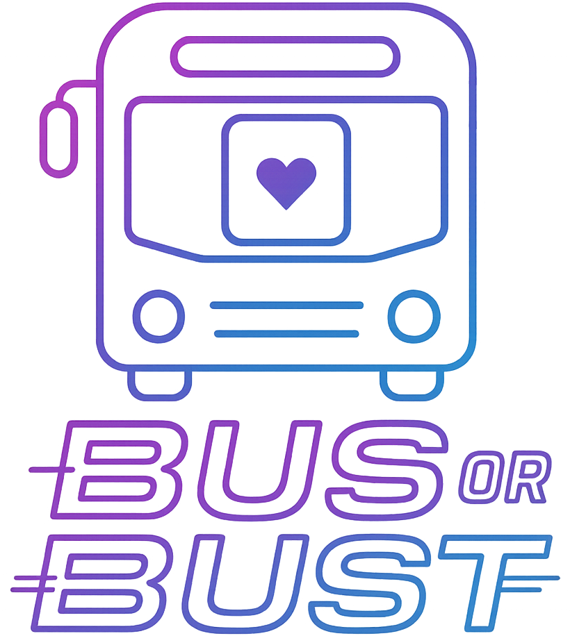
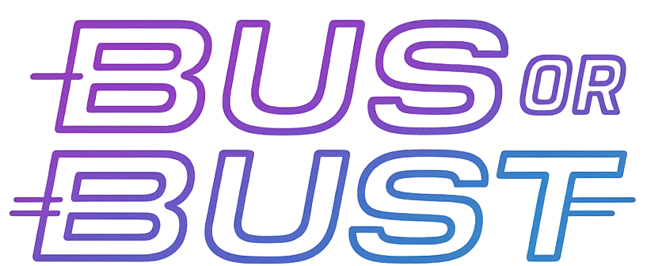

Notification message here!
×

Play Campaign Mode
How to Play
Options (Soon)

Back to Main Menu
Reset
Neon Glow
Bright Day
Classic Dark
Casino Night
Round info here
Multiplier info here
New Game (Classic)
Draw Card
Complete Quota
Previous
Next
×